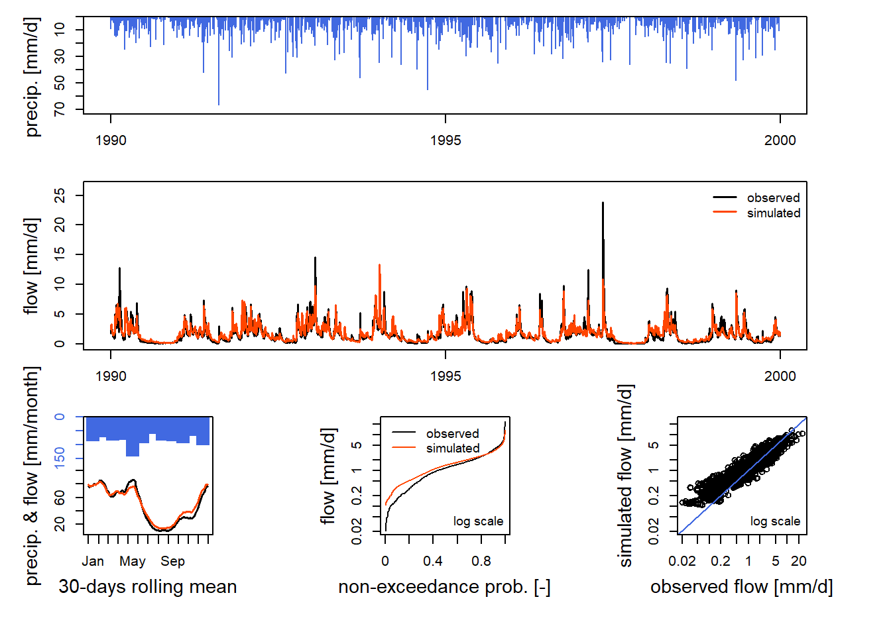

How to run airGR models
This section aims at introducing to the use of airGR through a description of the main steps needed to make hydrological simulations.
1 Loading data
In the following example, we use a data sample contained in the package. For real applications, the user has to import its data into R and to prepare it with an adequate data.frame format as described below.
First, it is necessary to load the airGR package:
Below is presented an example of a data.frame of daily hydrometeorological observations time series for a fictional catchment included in the airGR package that contains:
- DatesR: dates in the POSIXt format
- P: average precipitation [mm/day]
- T: catchment average air temperature [℃]
- E: catchment average potential evapotranspiration [mm/day]
- Qls: outlet discharge [l/s]
- Qmm: outlet discharge [mm/day]
## DatesR P T E
## Min. :1984-01-01 Min. : 0.0 Min. :-18.70 Min. :0.00
## 1st Qu.:1991-04-02 1st Qu.: 0.0 1st Qu.: 4.10 1st Qu.:0.60
## Median :1998-07-02 Median : 0.3 Median : 9.10 Median :1.40
## Mean :1998-07-02 Mean : 2.9 Mean : 9.15 Mean :1.76
## 3rd Qu.:2005-10-01 3rd Qu.: 3.6 3rd Qu.: 14.50 3rd Qu.:2.90
## Max. :2012-12-31 Max. :66.8 Max. : 28.40 Max. :5.50
##
## Qls Qmm
## Min. : 70 Min. : 0
## 1st Qu.: 1640 1st Qu.: 0
## Median : 4050 Median : 1
## Mean : 6130 Mean : 1
## 3rd Qu.: 7850 3rd Qu.: 2
## Max. :99500 Max. :24
## NA's :772 NA's :772The usual functions (e.g. read.table()) can be used to load real-case data sets.
2 Preparation of functions inputs
To run a model, the functions of the airGR package (e.g. the models, calibration and criteria calculation functions) require data and options with specific formats.
To facilitate the use of the package, there are several functions dedicated to the creation of these objects:
CreateInputsModel(): prepares the inputs for the different hydrological models (times series of dates, precipitation, observed discharge, etc.)CreateRunOptions(): prepares the options for the hydrological model run (warm up period, calibration period, etc.)CreateInputsCrit(): prepares the options in order to compute the efficiency criterion (choice of the criterion, choice of the transformation on discharge: “log”, “sqrt”, etc.)CreateCalibOptions(): prepares the options for the hydrological model calibration algorithm (choice of parameters to optimize, predefined values for uncalibrated parameters, etc.)
2.1 InputsModel object
To run a GR hydrological model or CemaNeige, the user has to prepare the input data with the CreateInputsModel() function. As arguments, this function needs the function name corresponding to the model the user wants to run, a vector of dates, a vector of precipitation and a vector of potential evapotranspiration.
In the example below, we already have the potential evapotranspiration. If the user does not have these data, it is possible to compute it with the Oudin’s formula with the PEdaily_Oudin() function (this function only needs Julian days, daily average air temperature and latitude).
Missing values (NA) of precipitation (or potential evapotranspiration) are not allowed.
InputsModel <- CreateInputsModel(FUN_MOD = RunModel_GR4J, DatesR = BasinObs$DatesR,
Precip = BasinObs$P, PotEvap = BasinObs$E)
str(InputsModel)## List of 3
## $ DatesR : POSIXlt[1:10593], format: "1984-01-01" "1984-01-02" ...
## $ Precip : num [1:10593] 4.1 15.9 0.8 0 0 0 0 0 2.9 0 ...
## $ PotEvap: num [1:10593] 0.2 0.2 0.3 0.3 0.1 0.3 0.4 0.4 0.5 0.5 ...
## - attr(*, "class")= chr [1:3] "InputsModel" "daily" "GR"2.2 RunOptions object
The CreateRunOptions() function allows to prepare the options required to the RunModel*() functions, which are the actual models functions.
The user must at least define the following arguments:
FUN_MOD: the name of the model function to runInputsModel: the associated input dataIndPeriod_Run: the period on which the model is run
To select a period for which the user wants to run the model, select the corresponding indexes for different time periods (not the POSIXt dates), as follows:
Ind_Run <- seq(which(format(BasinObs$DatesR, format = "%Y-%m-%d") == "1999-01-01"),
which(format(BasinObs$DatesR, format = "%Y-%m-%d")=="1999-12-31"))
str(Ind_Run)## int [1:365] 5480 5481 5482 5483 5484 5485 5486 5487 5488 5489 ...The initialization of hydrological models is of the utmost importance. Indeed, an inaccurate initialization causes poor quality discharge simulations during the earliest stages of the running period. For example, in the GR models, by default, the production and the routing store levels store level are respectively set to 30 % and 50 % of their capacity, which may be far from their ideal value. Two solutions are offered to accurately initialize the GR models in airGR: manually predefining the initial states (e.g. from a previous run) or running the models during a warm up period before the actual running period. It is generally advised to set up this warm up period to be equal or superior to one year.
As a consequence, it is possible to define in CreateRunOptions() the following arguments:
IniStates: the initial states of the 2 unit hydrographs (20 + 40 = 60 units)IniResLevels: the initial levels of the production and routing storesIndPeriod_WarmUp: the warm up period used to run the model, to be defined in the same format asIndPeriod_Run
RunOptions <- CreateRunOptions(FUN_MOD = RunModel_GR4J,
InputsModel = InputsModel, IndPeriod_Run = Ind_Run,
IniStates = NULL, IniResLevels = NULL, IndPeriod_WarmUp = NULL)## Warning in CreateRunOptions(FUN_MOD = RunModel_GR4J, InputsModel = InputsModel, : model warm up period not defined: default configuration used
## the year preceding the run period is used## List of 6
## $ IndPeriod_WarmUp: int [1:365] 5115 5116 5117 5118 5119 5120 5121 5122 5123 5124 ...
## $ IndPeriod_Run : int [1:365] 5480 5481 5482 5483 5484 5485 5486 5487 5488 5489 ...
## $ IniStates : num [1:67] 0 0 0 0 0 0 0 0 0 0 ...
## $ IniResLevels : num [1:3] 0.3 0.5 NA
## $ Outputs_Cal : chr "Qsim"
## $ Outputs_Sim : chr [1:20] "DatesR" "PotEvap" "Precip" "Prod" ...
## - attr(*, "class")= chr [1:3] "RunOptions" "GR" "daily"The CreateRunOptions() function returns warnings if the default initialization options are used:
IniStatesandIniResLevelsare automatically set to initialize all the model states at 0, except for the production and routing stores which are initialized at 50 % of their capacityIndPeriod_WarmUpdefault setting ensures a one-year warm up using the time steps preceding theIndPeriod_Run, if available
2.3 InputsCrit object
The CreateInputsCrit() function allows to prepare the input in order to calculate a criterion. It is possible to define the following arguments:
FUN_CRIT: the name of the error criterion function (the available functions are introduced later on)InputsModel: the inputs of the hydrological model previously prepared by theCreateInputsModel()functionRunOptions: the options of the hydrological model previously prepared by theCreateRunOptions()functionVarObs: the name of the considered variable (by default “Q” for the discharge)Obs: the observed variable time serie (e.g. the discharge expressed in mm/time step)
Missing values (NA) are allowed for observed discharge.
InputsCrit <- CreateInputsCrit(FUN_CRIT = ErrorCrit_NSE, InputsModel = InputsModel,
RunOptions = RunOptions, VarObs = "Q", Obs = BasinObs$Qmm[Ind_Run])
str(InputsCrit)## List of 8
## $ FUN_CRIT: chr "ErrorCrit_NSE"
## $ Obs : num [1:365] 4.01 4.27 4.97 4.39 3.82 ...
## $ VarObs : chr "Q"
## $ BoolCrit: logi [1:365] TRUE TRUE TRUE TRUE TRUE TRUE ...
## $ idLayer : logi NA
## $ transfo : chr ""
## $ epsilon : NULL
## $ Weights : NULL
## - attr(*, "class")= chr [1:2] "Single" "InputsCrit"2.4 CalibOptions object
Before using the calibration tool, the user needs to prepare the calibration options with the CreateCalibOptions()function. For that, it is necessary to define the following arguments:
FUN_MOD: the name of the model functionFUN_CALIB: the name of the calibration algorithm
CalibOptions <- CreateCalibOptions(FUN_MOD = RunModel_GR4J, FUN_CALIB = Calibration_Michel)
str(CalibOptions)## List of 3
## $ FixedParam : logi [1:4] NA NA NA NA
## $ SearchRanges : num [1:2, 1:4] 4.59e-05 2.18e+04 -1.09e+04 1.09e+04 4.59e-05 ...
## $ StartParamDistrib: num [1:3, 1:4] 169.017 247.151 432.681 -2.376 -0.649 ...
## - attr(*, "class")= chr [1:3] "CalibOptions" "GR4J" "HBAN"3 Criteria
The evaluation of the quality of a simulation is estimated through the calculation of criteria. These criteria can be used both as objective-functions during the calibration of the model, or as a measure for evaluating its performance on a control period.
The package offers the possibility to use different criteria:
ErrorCrit_RMSE(): Root mean square error (RMSE)ErrorCrit_NSE(): Nash-Sutcliffe model efficiency coefficient (NSE)ErrorCrit_KGE(): King-Gupta efficiency criterion (KGE)ErrorCrit_KGE2(): modified King-Gupta efficiency criterion (KGE’)
It is also possible to create user-defined criteria. For doing that, it is only necessary to define the function in R following the same syntax as the criteria functions included in airGR.
4 Calibration
The objective of the calibration algorithm is to identify the model parameters: by comparing the model outputs with observed data, this algorithm determines the combination of parameters that represents the best the behavior of the watershed.
In the airGR package, a function called Calibration_Michel() is implemented. This functions allows running a calibration with the package models. The calibration algorithm optimizes the error criterion selected as objective-function. This algorithm works in two steps:
- a screening of the parameters space is performed using either a rough predefined grid or a user-defined list of parameter sets
- a simple steepest descent local search algorithm is performed from the best set of parameters found at the first step
OutputsCalib <- Calibration_Michel(InputsModel = InputsModel, RunOptions = RunOptions,
InputsCrit = InputsCrit, CalibOptions = CalibOptions,
FUN_MOD = RunModel_GR4J)## Grid-Screening in progress (0% 20% 40% 60% 80% 100%)
## Screening completed (81 runs)
## Param = 169.017, -0.020, 83.096, 2.384
## Crit. NSE[Q] = 0.6841
## Steepest-descent local search in progress
## Calibration completed (23 iterations, 249 runs)
## Param = 225.879, 1.779, 105.636, 2.218
## Crit. NSE[Q] = 0.7953## [1] 225.88 1.78 105.64 2.22The Calibration_Michel() function is the only one implemented in the airGR package to calibrate the model, but the user can implement its own calibration function.
The Calibration_Michel() function returns a vector with the parameters of the chosen model, which means that the number of values can differ depending on the model that is used. It is possible to use the Calibration_Michel() function with user-implemented hydrological models.
5 Control
This step assesses the predictive capacity of the model. Control is defined as the estimation of the accuracy of the model on data sets that are not used in its construction, and in particular its calibration. The classical way to perform a control is to keep data from a period separated from the calibration period. If possible, this control period should correspond to climatic situations that differ from those of the calibration period in order to better point out the qualities and weaknesses of the model. This exercise is necessary for assessing the robustness of the model, that is to say its ability to keep stable performances outside of the calibration conditions.
Performing a model control with airGR is similar to running a simulation (see below), followed by the computation of one or several performance criteria.
6 Simulation
6.1 Simulation run
To run a model, the user has to use the RunModel*() functions (InputsModel, RunOptions and parameters). All the data needed have already been prepared in the previous steps defined in this guide.
OutputsModel <- RunModel_GR4J(InputsModel = InputsModel, RunOptions = RunOptions, Param = Param)
str(OutputsModel)## List of 20
## $ DatesR : POSIXlt[1:365], format: "1999-01-01" "1999-01-02" ...
## $ PotEvap : num [1:365] 0.6 0.4 0.2 0.1 0.3 0.3 0.1 0 0.1 0.2 ...
## $ Precip : num [1:365] 3.6 7.9 1.6 1 4.6 2.5 1.7 0 0.6 2.2 ...
## $ Prod : num [1:365] 179 181 181 181 181 ...
## $ Pn : num [1:365] 3 7.5 1.4 0.9 4.3 2.2 1.6 0 0.5 2 ...
## $ Ps : num [1:365] 1.106 2.701 0.496 0.321 1.526 ...
## $ AE : num [1:365] 0.6 0.4 0.2 0.1 0.3 0.3 0.1 0 0.1 0.2 ...
## $ Perc : num [1:365] 0.702 0.741 0.736 0.728 0.744 ...
## $ PR : num [1:365] 2.6 5.54 1.64 1.31 3.52 ...
## $ Q9 : num [1:365] 1.83 2.66 3.9 2.23 1.52 ...
## $ Q1 : num [1:365] 0.137 0.238 0.342 0.351 0.229 ...
## $ Rout : num [1:365] 66.2 66.4 67.5 67 66.1 ...
## $ Exch : num [1:365] 0.359 0.347 0.349 0.37 0.362 ...
## $ AExch1 : num [1:365] 0.359 0.347 0.349 0.37 0.362 ...
## $ AExch2 : num [1:365] 0.359 0.347 0.349 0.37 0.362 ...
## $ AExch : num [1:365] 0.718 0.694 0.699 0.741 0.724 ...
## $ QR : num [1:365] 2.83 2.87 3.14 3.03 2.81 ...
## $ QD : num [1:365] 0.496 0.585 0.691 0.722 0.592 ...
## $ Qsim : num [1:365] 3.33 3.45 3.83 3.75 3.4 ...
## $ StateEnd:List of 3
## ..$ Store :List of 3
## .. ..$ Prod: num 169
## .. ..$ Rout: num 57.7
## .. ..$ Exp : num NA
## ..$ UH :List of 2
## .. ..$ UH1: num [1:20] 0.505 0.536 0.153 0 0 ...
## .. ..$ UH2: num [1:40] 0.055312 0.056405 0.042209 0.012415 0.000639 ...
## ..$ CemaNeigeLayers:List of 4
## .. ..$ G : num NA
## .. ..$ eTG : num NA
## .. ..$ Gthr : num NA
## .. ..$ Glocmax: num NA
## ..- attr(*, "class")= chr [1:3] "IniStates" "GR" "daily"
## - attr(*, "class")= chr [1:3] "OutputsModel" "daily" "GR"6.2 Results preview
Although it is possible for the user to design its own graphics from the outputs of the RunModel*() functions, the airGR package offers the possibility to make use of the plot() function. This function returns a dashboard of results including various graphs (depending on the model used):
- time series of total precipitation and simulated discharge (and observed discharge if provided)
- interannual average daily simulated discharge (and daily observed discharge if provided) and interannual average monthly precipitation
- correlation plot between simulated and observed discharge (if observed discharge provided)
- cumulative frequency plot for simulated discharge (and for observed discharge if provided)

Moreover, if the CemaNeige model is used, the air temperature and the simulated snowpack water equivalent time series are plotted.
6.3 Efficiency criterion
To evaluate the efficiency of the model, it is possible to use the same criterion as defined at the calibration step or to use another criterion.
## Crit. NSE[Q] = 0.7953## List of 5
## $ CritValue : num 0.795
## $ CritName : chr "NSE[Q]"
## $ CritBestValue : num 1
## $ Multiplier : num -1
## $ Ind_notcomputed: NULL
## - attr(*, "class")= chr [1:2] "NSE" "ErrorCrit"## Crit. KGE[Q] = 0.7506## SubCrit. KGE[Q] cor(sim, obs, "pearson") = 0.9023
## SubCrit. KGE[Q] sd(sim)/sd(obs) = 0.7742
## SubCrit. KGE[Q] mean(sim)/mean(obs) = 1.0406## List of 7
## $ CritValue : num 0.751
## $ CritName : chr "KGE[Q]"
## $ SubCritValues : num [1:3] 0.902 0.774 1.041
## $ SubCritNames : chr [1:3] "r" "alpha" "beta"
## $ CritBestValue : num 1
## $ Multiplier : num -1
## $ Ind_notcomputed: NULL
## - attr(*, "class")= chr [1:2] "KGE" "ErrorCrit"